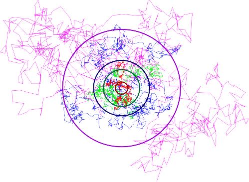
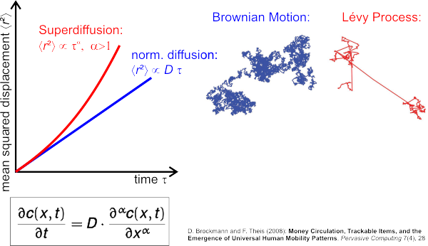

$$qf_commondoc_header.start$$ $$qf_commondoc_header.end$$
Introduction
Ths plugn implements methods to extract the mean squared displacement (MSD) from fluorescence correlation spectroscopy (FCS) data, as described in these references:
- Roman Shusterman, Sergey Alon, Tatyana Gavrinyov, Oleg Krichevsky (2003): "Monomer Dynamics in Double- and Single-Stranded DNA Polymers", Physical review Letters 92(4), DOI: 10.1103/PhysRevLett.92.048303
The Mean Squared Displacement (MSD)
The MSD describes the motion of diffusin particles. Roughly it is the variance of the random motion and can be interpreted as the area a particle has wandered over during a time $$math:\tau$$. It is defined for the trajectory of a single particle (random walker) $$math:\vec{r}(t)$$ as:
$$bmath:\langle r^2(\tau)\rangle=\left\langle (\vec{r}(t)-\vec{r}(t+\tau) )^2\right\rangle$$
where the averaging $$math:\langle\cdot\rangle$$ is a time-average over the trajectory. If we observe several particles the time-average may be replaced by an ensemble or a combined ensemble and time average. In FCS the average is usually the last of these, as we observe several particles during the measurement.

Fig 1: Four trajectories of random walks with different diffusion coefficients that increase (red, green, blue, magenta) by a factor of five between two subsequent walks. The circles show the root mean squared displacement $$math:\sqrt{\langle r^2(T)\rangle}$$ of the particle from its origin, a measure of the area, the particle covers during the simulation time $$math:T$$.
For normal diffusion the dependence of the MSD on the time $$math:\tau$$ is known:
$$bmath:\langle r^2(\tau)\rangle=2d\cdot D\cdot\tau$$
where $$math:d$$ is the dimensionality of the motion ($$math:d=3$$ for 3D, $$math:d=2$$ for 2D and $$math:d=1$$ for 1D motion) and $$math:D$$ is the diffusion coefficient. In some cases this dependence does not hold, e.g.:
- Due to crowding the diffusion inside the cellular nucleus is hindered
- If only one segment on a long polymer is labeled and observed, we will see a different MSD for small timescales, as it represents here the internal motion of the segment inside the polymer chain and not the overall motion of the whole molecule.
For both cases the dependence of the MSD on time $$math:\tau$$ is "subdiffusive" and we have instead of above's relation:
$$bmath:\langle r^2(\tau)\rangle=\Gamma\cdot\tau^\alpha$$
Here $$math:\alpha$$ represents the anomality of the random walk for subdiffusive motion we find $$math:\alpha<1$$, for normal diffusion we have $$math:\alpha=1$$ and the case $$math:\alpha>1$$ is called super-diffusion.

Fig 2: Examples for anomalous subdiffusion

Fig 3: Examples for anomalous superdiffusion
The Plugin
In many cases it is possible to write down a model ACF $$math:g(\langle r^2(\tau)\rangle)$$ for a given mean squared displacement $$math:\langle r^2(\tau)\rangle$$. If so it should also be possible to regain the MSD $$math:\langle r^2(\tau)\rangle$$ from the measured ACF $$math:g_m(\tau)$$ by solving:
$$bmath:g(\langle r^2(\tau)\rangle)-g_m(\tau)=0$$
for the MSD $$math:\langle r^2(\tau)\rangle$$. This equation (for details on the model functions, see next section) can either be solved analytically for simple cases or numerically for more complex situations. This plugin does exactly that:
- First the user has to select a valid range from the measured ACF on which the MSD should be extracted. Take special care to avoid regions with e.g. triplet contributions if the selected model does not account for them.
- Then several model parameters (e.g. focal sizes, correlation amplitudes/particle numbers) have to be determined indepentendly and supplied to the plugin as "fit parameters".
- Finally a click on "fit" will extract the MSD for the given settinsg from the data. The MSD will be displayed in a double-logarithmic plot, in which the diffusion laws $$math:\propto\tau^\alpha$$ will appear as straight lines with slopes depending on $$math:\alpha$$ only.
- It is possible to display up to three "theory curves" alongside the extracted MSD with parameters electable by the user. This is handy to compare the extracted MSD to known or expected dependencies. A button next to the input controls for each theory curve allows to obtain the parameters by a fit to the MSD curve.
- From the MSD the plugin also calculates the local anomality "local α" and the local diffusion coefficient "local D" by cutting the MSD in several consecutive segments of "fit width" points. Then the model $$bmath:f(\tau)=6\cdot D\cdot\tau^\alpha$$ is fitted to each of these
segments using the levenberg marquardt library lmfit by Joachim Wuttke, a simple linear regression or a more rbust regression method (iteratively reweighted linear regression, IRLS). The results of these fits are displayed below the MSD in a second plotting widget. Note that the unit of $$math:D$$ is μm2/s only,
if $$math:\alpha=1$$. In any other case the unit is μm2/sα and can no longer be interpreted a s a diffusion coefficient easily!
- The plugin is able to calculate the average of the MSD and $$math:D(\tau), \alpha(\tau)$$ curves for you. To do so, use the menu entry "Results|
 copy runs-average of MSD". You will first be asked which runs to average over and which data to copy, then the average will be calculated and copied to the clipboard. Paste it into any spreadsheet/data evaluation program you want.
copy runs-average of MSD". You will first be asked which runs to average over and which data to copy, then the average will be calculated and copied to the clipboard. Paste it into any spreadsheet/data evaluation program you want.
Supported Models
This plugin supports several models from which the MSD is extracted:
- FCS: simple 2D model: The confocal FCS model function for 2D diffusion is very simple:
$$bmath:g(\tau)=\frac{1}{N}\cdot\left(1+\frac{2}{3}\frac{\langle r^2(\tau)\rangle}{w_{xy}^2}\right)^{-1}$$
Here $$math:w_{xy}$$ is the axial 1/e2 radius of the laser focus and $$math:N$$ is the particle number.
This model can easily be inverted to yield the MSD from the memasured ACF $$math:g_m(\tau)$$:
$$bmath:\langle r^2(\tau)\rangle=\frac{3\cdot w_{xy}^2}{2}\cdot\left(\frac{1}{N\cdot g_m(\tau)}-1\right)$$
So only the focal parameter $$math:w_{xy}$$ and the particle number $$math:N$$ have to be measured independently. The focus can be measured using a standard calibration solution (e.g. 20nM Alexa-488 in water). And the particle number $$math:N$$ can be extracted from a multi-component fit to the same measured ACF.
- FCS: simple 3D model: The confocal FCS model function for 3D diffusion is very similar to the 2D case:
$$bmath:g(\tau)=\frac{1}{N}\cdot\left(1+\frac{2}{3}\frac{\langle r^2(\tau)\rangle}{w_{xy}^2}\right)^{-1}\cdot\left(1+\frac{2}{3}\frac{\langle r^2(\tau)\rangle}{w_{xy}^2}\right)^{-1/2}$$
Here $$math:w_{xy}$$ is the axial 1/e2 radius of the laser focus, $$math:\gamma$$ is its axial ratio and $$math:N$$ is the particle number.
This model can not easily be inverted to find the MSD from the memasured ACF $$math:g_m(\tau)$$, so the inversion has to be done numerically using the Levenberg-Marquardt (LM) algorithm. The LM algorithm is then used to solve this equation for every pair $$math:\left(\tau_i, g_m(\tau_i)\right)$$ of estimates for different lag times of the ACF
$$bmath:\left(1+\frac{2}{3}\frac{\langle r^2(\tau)\rangle}{w_{xy}^2}\right)\cdot\left(1+\frac{2}{3}\frac{\langle r^2(\tau)\rangle}{w_{xy}^2}\right)^{1/2}-\frac{1}{N\cdot g_m(\tau)}=0$$
Here the focal parameters $$math:w_{xy}$$ and $$math:\gamma$$ and the particle number $$math:N$$ have to be measured independently. The focus can be measured using a standard calibration solution (e.g. 20nM Alexa-488 in water). And the particle number $$math:N$$ can be extracted from a multi-component fit to the same measured ACF.
This plugin uses the LM library lmfit by Joachim Wuttke.
- FCS: simple 2D model, with triplet correction: This is the same model, as above but with an additional correction of a triplet term $$math:X(\tau)$$ (divide measured curve $$math:\hat{g}(\tau)$$ by this term: $$math:\hat{g}(\tau)/X(\tau)$$) before calculating the MSD:
$$bmath:X(\tau)=\frac{1-\theta_T+\theta_T\cdot\exp(-\tau/\tau_T)}{1-\theta_T}$$
- FCS: simple 3D model, with triplet correction: This is the same model, as above but with an additional correction of a triplet term $$math:X(\tau)$$ (divide measured curve $$math:\hat{g}(\tau)$$ by this term: $$math:\hat{g}(\tau)/X(\tau)$$) before calculating the MSD:
$$bmath:X(\tau)=\frac{1-\theta_T+\theta_T\cdot\exp(-\tau/\tau_T)}{1-\theta_T}$$
-
SPIM-FCS: 3D Diffusion: The model is given by:
$$bmath:g(\tau)=\frac{1}{\sqrt{\pi}\cdot w_z\cdot a^2\cdot N/V_{\text{eff}}}\cdot\frac{1}{\sqrt{\pi}\cdot w_za^2}\cdot\left[\mbox{erf}\left(\frac{a}{\sqrt{\frac{2}{3}\langle r^2\rangle+w_{xy}^2}}\right)+\sqrt{\frac{2}{3}\langle r^2\rangle+w_{xy}^2}\cdot\left[\exp\left(-\frac{a^2}{\frac{2}{3}\langle r^2\rangle+w_{xy}^2}\right)-1\right]\right]^2\cdot\left[1+\frac{\frac{2}{3}\langle r^2\rangle}{w_z^2}\right]^{-1/2}$$
$$bmath:V_{\text{eff}}=\frac{\sqrt{\pi}\cdot a^2w_z}{\left(\mbox{erf}\left(\frac{a}{w_{xy}}\right)+\frac{w_{xy}}{\sqrt{\pi}\cdot a}\cdot\left(e^{-(a/w_{xy})^2}-1\right)\right)^2}$$
As earlier
 describes an offset constant.
$$math:w_{xy}$$ and $$math:w_z$$ are the 1/e2 focus width and height , $$math:a$$ is the pixel size and $$math:N$$ is the particle number
describes an offset constant.
$$math:w_{xy}$$ and $$math:w_z$$ are the 1/e2 focus width and height , $$math:a$$ is the pixel size and $$math:N$$ is the particle number
-
camera TIR-FCS: 2D Diffusion: The model is given by:
$$bmath:g(\tau)=\frac{1}{ a^2\cdot N/V_{\text{eff}}}\cdot\frac{1}{\sqrt{\pi}\cdot w_za^2}\cdot\left[\mbox{erf}\left(\frac{a}{\sqrt{\frac{2}{3}\langle r^2\rangle+w_{xy}^2}}\right)+\sqrt{\frac{2}{3}\langle r^2\rangle+w_{xy}^2}\cdot\left[\exp\left(-\frac{a^2}{\frac{2}{3}\langle r^2\rangle+w_{xy}^2}\right)-1\right]\right]^2$$
$$bmath:V_{\text{eff}}=\frac{\cdot a^2}{\left(\mbox{erf}\left(\frac{a}{w_{xy}}\right)+\frac{w_{xy}}{\sqrt{\pi}\cdot a}\cdot\left(e^{-(a/w_{xy})^2}-1\right)\right)^2}$$
As earlier describes an offset constant.
$$math:w_{xy}$$ and $$math:w_z$$ are the 1/e2 focus width and height , $$math:a$$ is the pixel size and $$math:N$$ is the particle number
Implementation Details